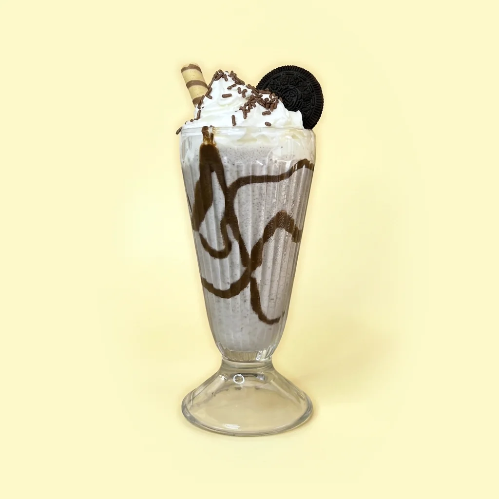
Esta guía está pensada para leerse de corrido la primera vez y después consultar solo el capítulo que necesites. Las imágenes son de tu propio sistema, tal como lo vas a ver.
El sistema funciona en internet, así que no hay nada que instalar. Se entra desde cualquier navegador (recomendamos Google Chrome) en esta dirección:
Lo ideal es que cada persona entre con su propio usuario: así el sistema registra quién tomó cada pedido y quién cerró la caja. En el capítulo 12 verás cómo crear más.
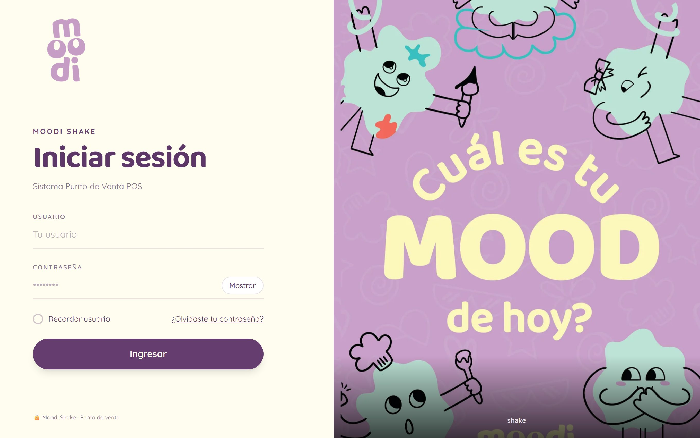
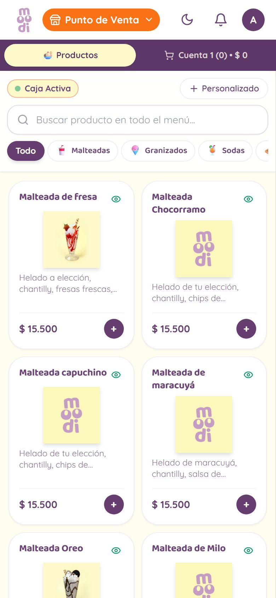
Funciona igual en computador, tablet y celular. En el celular el menú se acomoda abajo y el carrito se abre con el botón de la cuenta.
Necesita conexión. Si se va el internet, lo que ya se cobró está guardado; solo espera a que vuelva para seguir vendiendo.
El sistema se adapta a cómo trabajan. No tienen que usar todo: pueden empezar con lo más simple y activar lo demás cuando lo necesiten.
El cliente pide, se cobra y se entrega. Todo pasa en la pantalla Punto de Venta. Es la forma más rápida.
Para cuando hay que preparar y el cliente espera o pasa después: Para llevar y Domicilios. Cada pedido va cambiando de estado hasta que se entrega.
Plano del local, cuentas abiertas por mesa, comandas a cocina, precuenta y cuentas separadas.
| Situación | Dónde se hace | Qué pasa |
|---|---|---|
| Cliente en el mostrador que pide, paga y recibe | Punto de Venta | Se cobra en el momento. Queda la venta y, si quieren, el recibo. |
| Cliente que pide varias cosas y espera a que las preparen | Para llevar | El pedido queda a su nombre: Pendiente → En preparación → Listo → Entregado. Se cobra antes o al recoger. |
| Pedido por teléfono o WhatsApp para enviar | Domicilios | Lleva dirección, repartidor, tiempo estimado y costo de envío. Se puede cobrar contra entrega. |
| Clientes sentados que piden por partes | Mesas (si lo activan) | Cuenta abierta por mesa, se agregan productos, se imprime la precuenta y al final se cobra. |
En Configuración → Restaurante → Módulos del restaurante. Lo que esté marcado aparece en el menú de la izquierda; lo que no, se oculta y nadie lo ve.
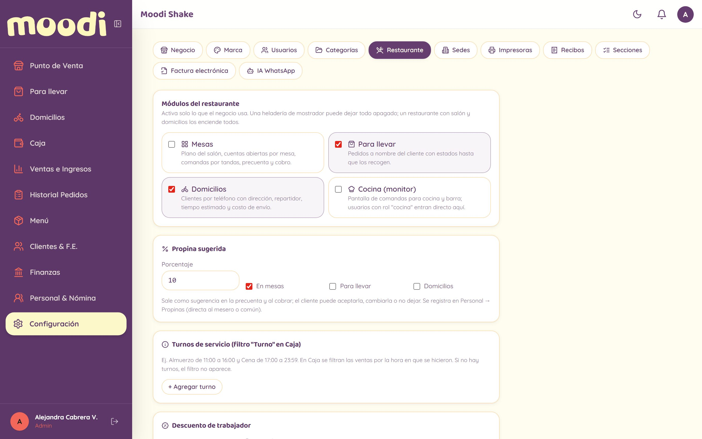
Esto es lo mínimo que hay que hacer todos los días para que las cuentas cuadren. Toma dos minutos al abrir y cinco al cerrar.
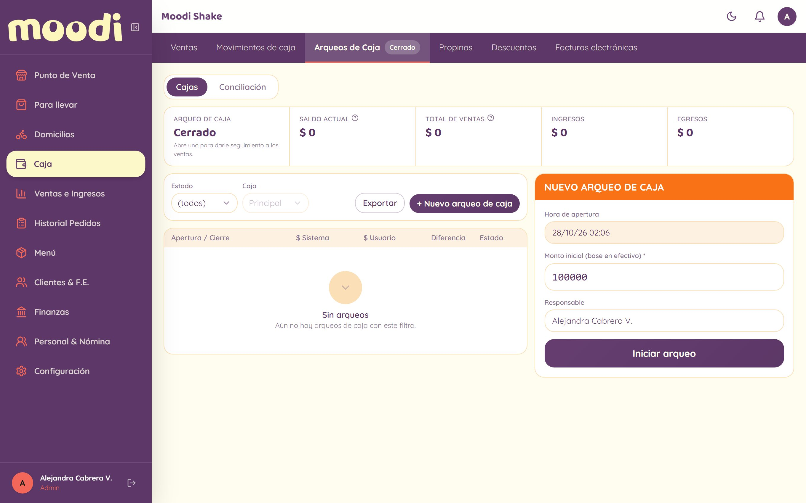
Con la caja abierta, todas las ventas del día quedan dentro de ese turno, sin importar si se hicieron en Punto de Venta, Para llevar o Domicilios. Los capítulos 4 a 6 explican cada pantalla.
La pantalla principal para vender en el mostrador. A la izquierda el menú con fotos, a la derecha la cuenta que se está armando.
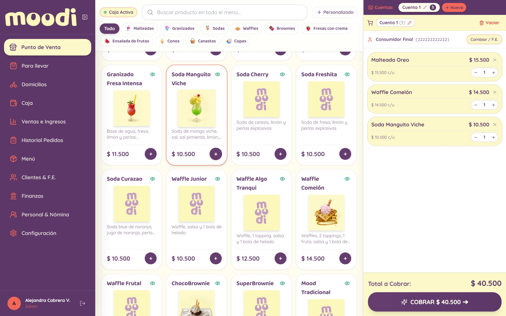
Por defecto la venta va a Consumidor Final. Con Cambiar / F.E. eliges un cliente del directorio (o lo creas) y, cuando tengan activada la facturación electrónica, desde ahí mismo se marca que necesita factura.
Para pedidos que se preparan y el cliente espera o pasa a recoger. Cada pedido tiene nombre y va cambiando de columna.
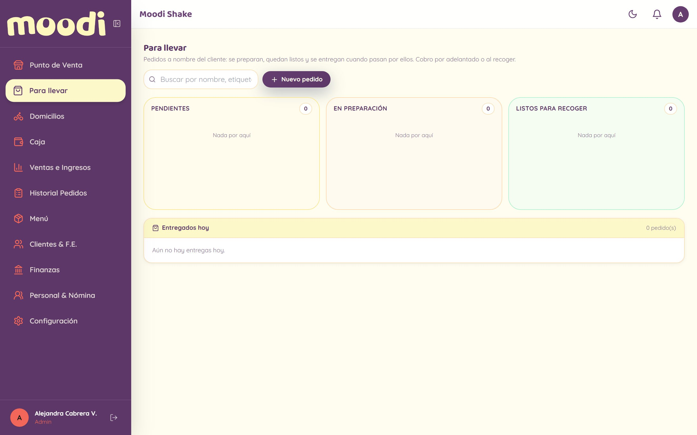
Se puede cobrar en cualquier momento con Cobrar: al tomar el pedido o al entregarlo. Si lo entregas sin cobrar, el sistema te pide el cobro ahí mismo.
Pedidos para enviar. Guarda la dirección y el teléfono del cliente, asigna el repartidor y controla el tiempo.
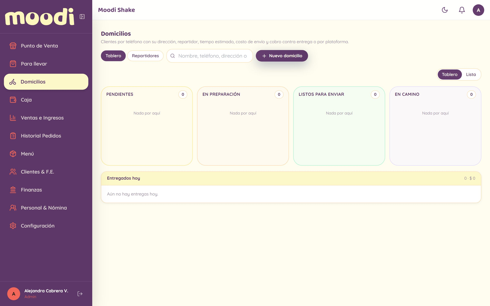
Si el cliente paga en efectivo al recibir, no hace falta cobrar antes: al marcar Entregado se registra el cobro. Si paga por transferencia, cóbralo cuando llegue el comprobante.
En la pestaña Repartidores se ve cuánto efectivo tiene cada uno por entregar a la caja. Si al repartidor le crean un usuario con perfil Domiciliario, en su celular ve solo Mis domicilios: sus pedidos con la dirección y un botón para abrir el mapa y otro para marcar entregado.
Hoy está apagado. Si en algún momento atienden clientes sentados con cuenta abierta, se activa en Configuración → Restaurante → Mesas y aparece en el menú.
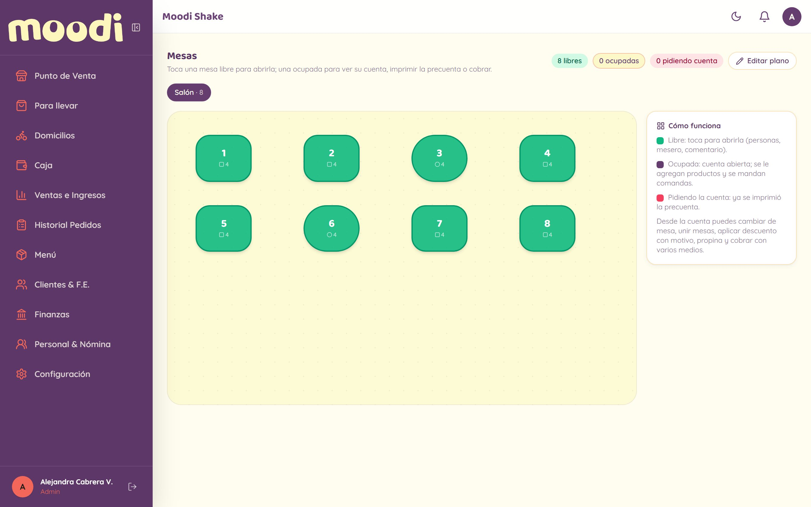
La sección Caja reúne todo el dinero: ventas, movimientos, arqueos, propinas, descuentos y facturas.
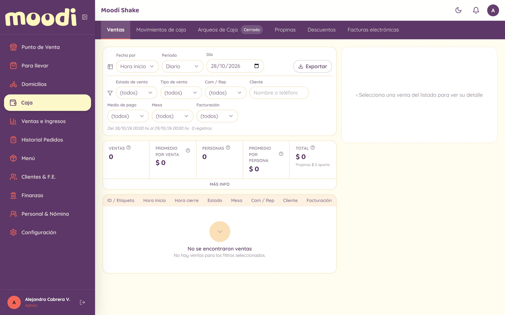
| Pestaña | Para qué sirve |
|---|---|
| Ventas | Lista de ventas del día (o del período que elijas). Ver el detalle, reimprimir el recibo, corregir el medio de pago o anular una venta equivocada. Exportar baja un Excel. |
| Movimientos de caja | Dinero que entra o sale sin ser una venta: pagar el domicilio de un insumo, sacar plata para una compra, meter cambio. Cada uno con motivo. Así el cierre cuadra. |
| Arqueos de Caja | Abrir y cerrar la caja (capítulo 3) y ver los cierres anteriores con su diferencia. Conciliación compara varios días. |
| Propinas | Lo que se recibió de propina y a quién se le entrega. |
| Descuentos | Todos los descuentos aplicados, con quién lo hizo y el motivo. |
| Facturas electrónicas | Cuando se active la facturación con la DIAN: emitir y consultar facturas. |
Todos los pedidos de todos los modos, con búsqueda por nombre, número o fecha. Abre uno para ver qué llevó, cómo pagó, quién lo atendió, y para reimprimir o compartir el recibo por WhatsApp.
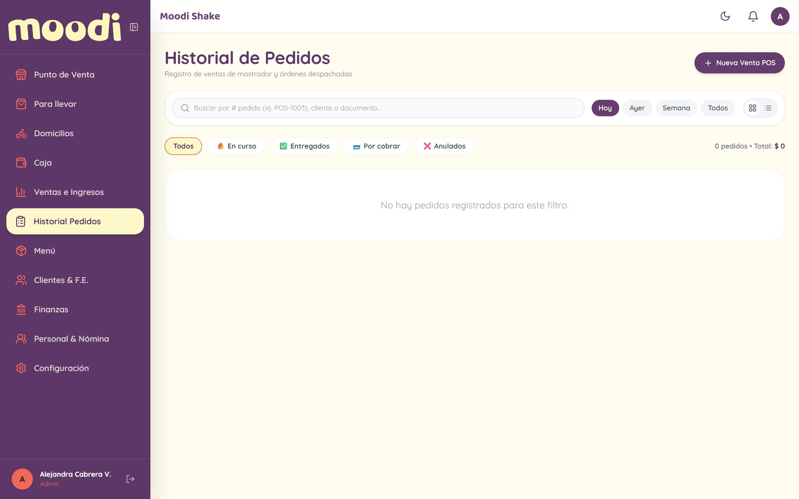
Cuánto se vendió por día, semana o mes; qué productos salen más; cómo pagan los clientes; comparación con períodos anteriores. Es la pantalla para ver cómo va el negocio.
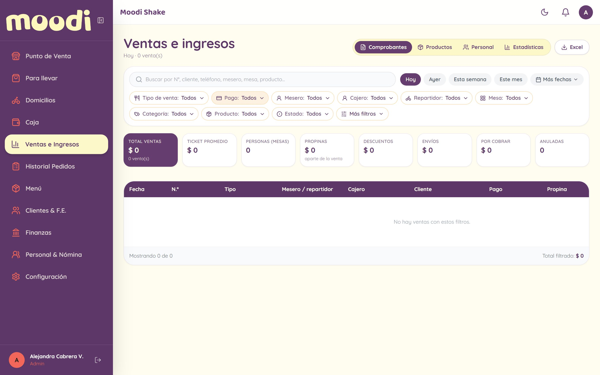
Aquí viven los productos: nombre, categoría, precio, foto, descripción y si está disponible. Ya está cargado el menú completo de Moodi (33 productos en 10 categorías).
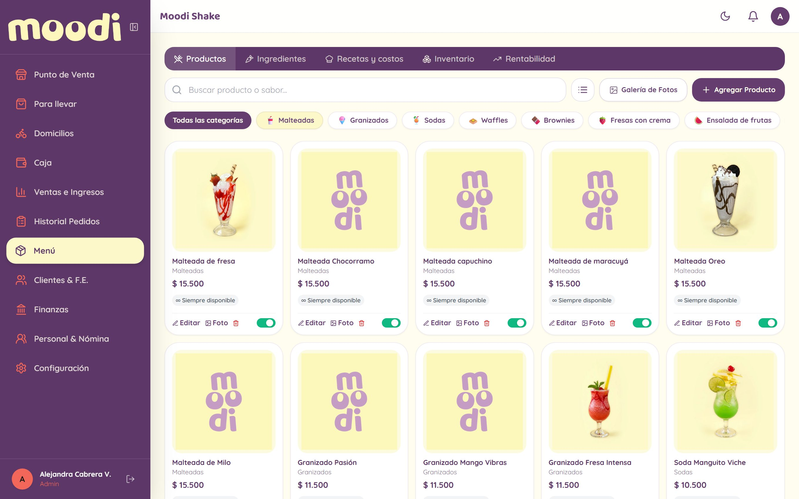
Se manejan en Configuración → Categorías: nombre, emoji o foto, y orden en que aparecen.
No son obligatorias. El negocio funciona completo sin ellas; se activan cuando quieran llevar ese control.
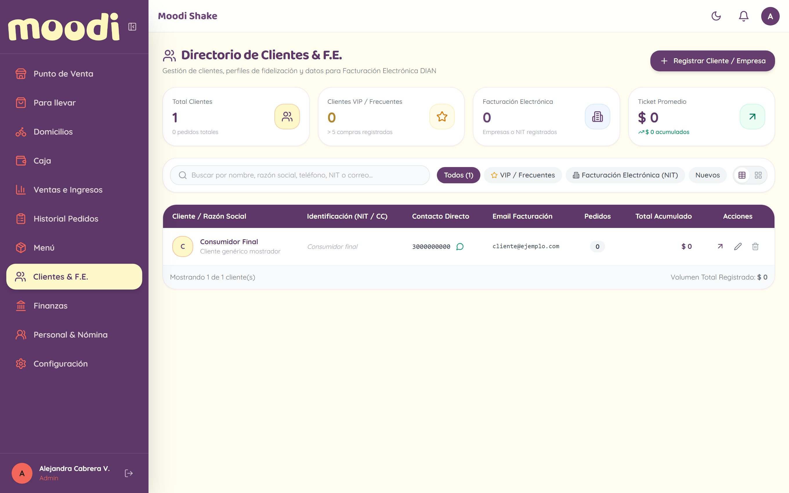
Cada vez que toman un domicilio o un pedido con teléfono, el cliente queda guardado. La próxima vez, con el teléfono se llenan sus datos. Desde su ficha se ve cuántas veces ha comprado y qué pide.
El sistema está preparado para emitir facturas electrónicas validadas por la DIAN cuando el negocio lo necesite. Para activarlo se requiere el NIT, la resolución de facturación y una cuenta con el proveedor tecnológico. Mientras tanto, los recibos normales funcionan igual.
Cuando un cliente pida factura: en el cobro, Cambiar / F.E. → datos del cliente → marcar factura electrónica.
En Configuración → Usuarios se crea un usuario por persona y se elige qué puede ver y hacer.
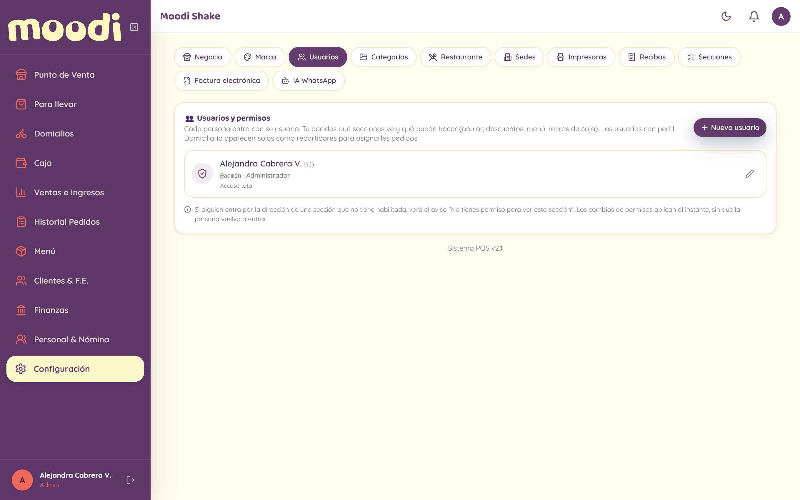
| Pestaña | Qué hay ahí |
|---|---|
| Negocio | Nombre, eslogan, teléfono, dirección, NIT, horario e impuesto. Estos datos salen en los recibos. |
| Marca | Colores, letras, logos (barra lateral, inicio de sesión, menú recogido) y el logo que sale en los recibos. Ya está con la identidad de Moodi. |
| Usuarios | Capítulo 12. |
| Categorías | Las del menú, con su emoji o foto y orden. |
| Restaurante | Módulos (Mesas, Para llevar, Domicilios, Cocina), propina sugerida, costo y tiempos de domicilio, descuento de trabajadores y "exigir caja abierta para vender". |
| Impresoras | Cómo se imprime (capítulo 14). |
| Recibos | Qué datos salen en el recibo, el logo, un texto de encabezado y el mensaje final ("¡Gracias por tu visita!"). Con vista previa. |
| Secciones | Ocultar partes del sistema que no usen (por ejemplo Finanzas o Nómina) para que el menú quede más simple. |
| Factura electrónica | Activación con la DIAN cuando la necesiten. |
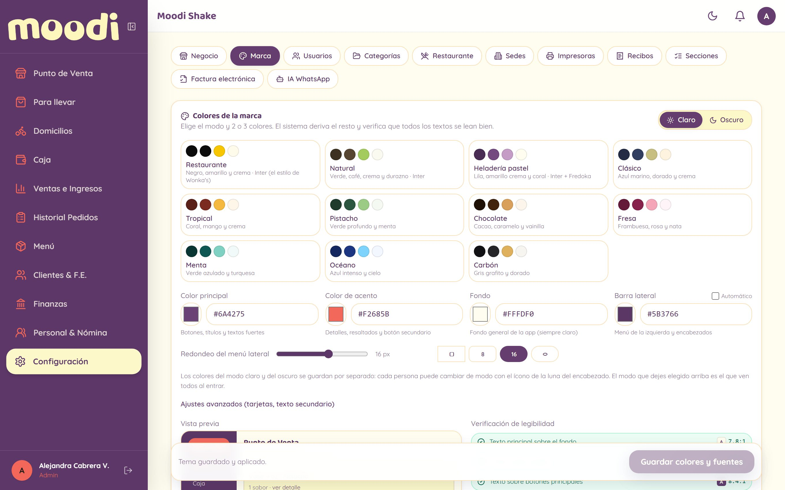
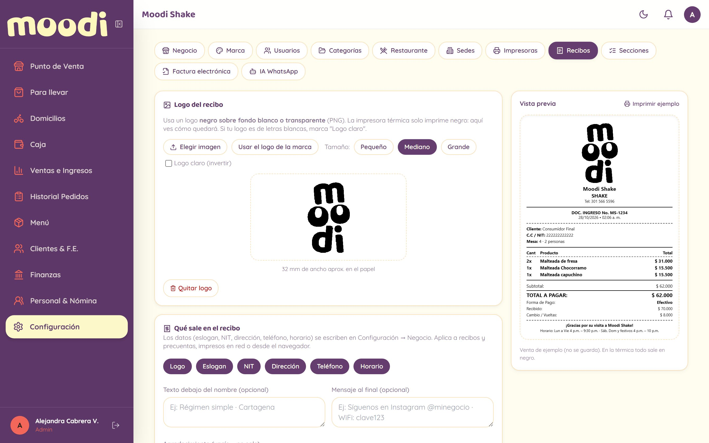
Se puede trabajar sin imprimir (el recibo también se comparte por WhatsApp). Si quieren papel, hay dos formas.
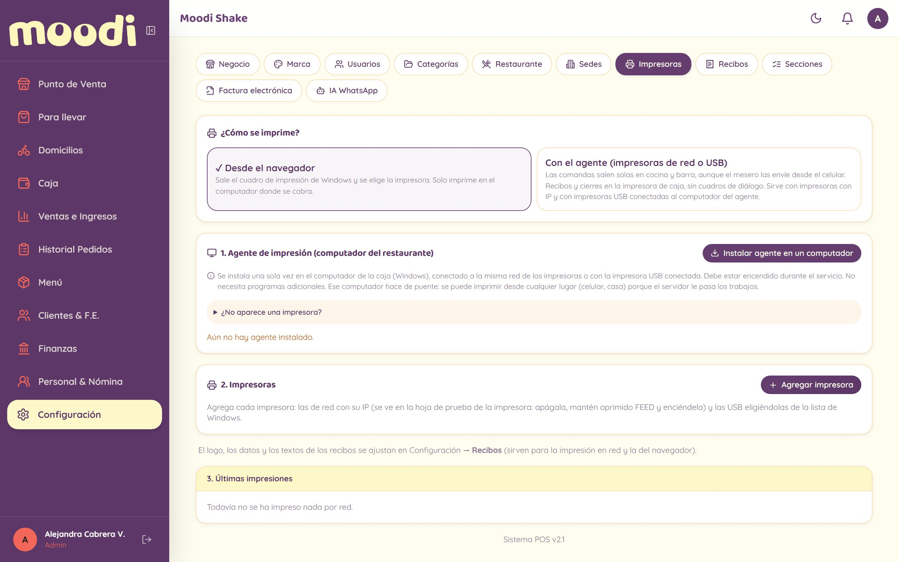
Al imprimir sale el cuadro de impresión de Windows y se elige la impresora. Sirve con cualquier impresora instalada en el computador, incluidas las térmicas USB. Es lo más simple para empezar.
Un pequeño programa que se instala una vez en el computador de la caja. Los recibos salen solos, sin cuadros de diálogo, y se puede imprimir desde el celular o la tablet. Funciona con impresoras de red (IP) y USB.
La instalación la hacemos nosotros con ustedes en 10 minutos cuando tengan la impresora. El logo, los datos y los textos del recibo se ajustan en Configuración → Recibos y sirven para las dos formas.
Dos secciones para cuando quieran llevar más control. No son necesarias para vender, y se pueden ocultar en Configuración → Secciones.
Gastos del negocio (arriendo, servicios, insumos), cuentas por pagar a proveedores con recordatorio de vencimiento, y un resumen de ingresos contra gastos para ver la utilidad del mes. Los gastos pagados desde la caja se descuentan del arqueo automáticamente.
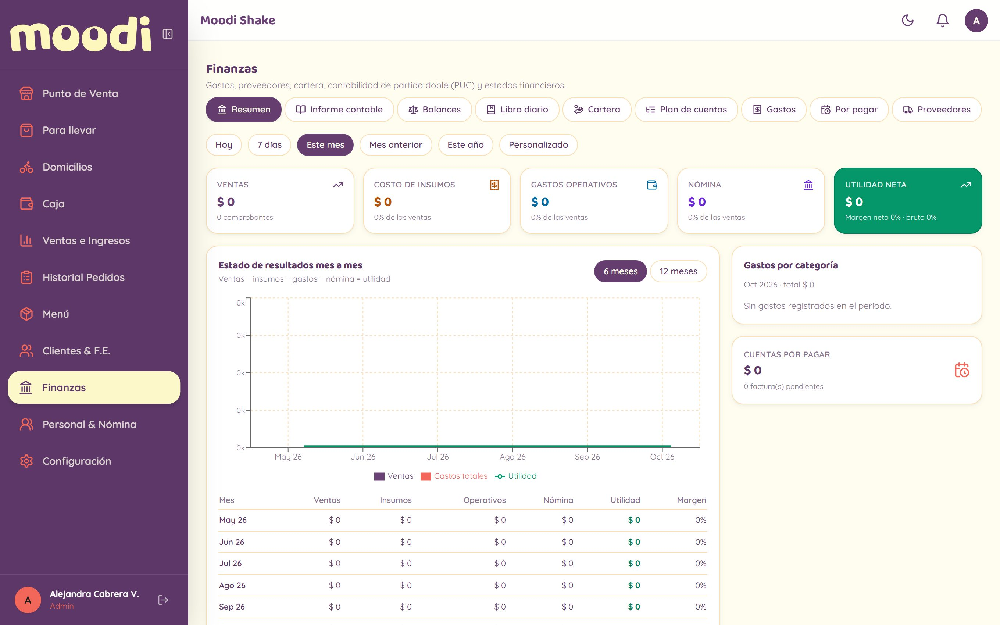
Lista de colaboradores con su pago (por día, quincena o mes), asistencia, anticipos, propinas repartidas, consumos del personal con descuento, y liquidaciones con comprobante. Cada colaborador puede entrar a Mi cuenta y ver lo suyo.
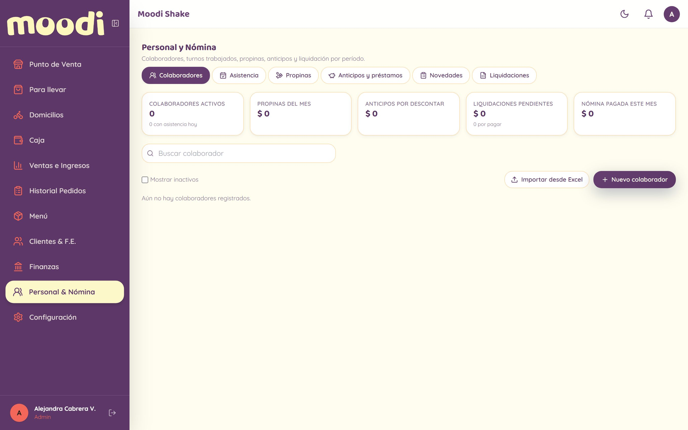
DT Growth Partners · Stiven Antequera. Escríbenos por WhatsApp cuando necesiten ayuda, quieran activar algo nuevo o se les ocurra una mejora. El sistema se actualiza solo, sin que tengan que hacer nada.
¿Cuál es tu MOOD de hoy?